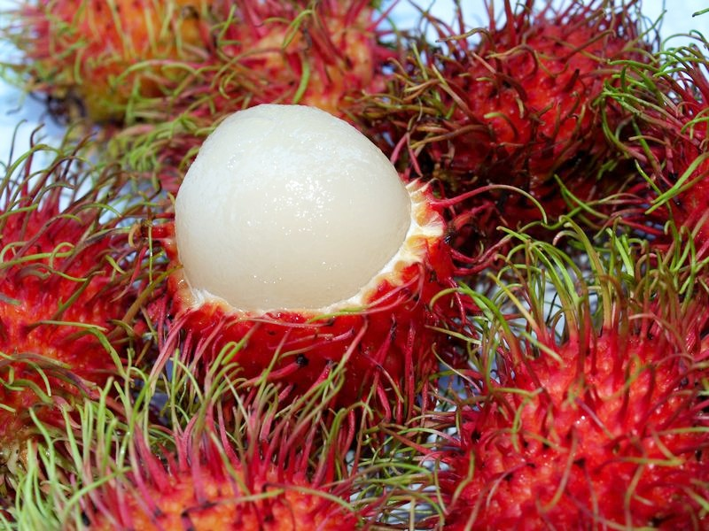
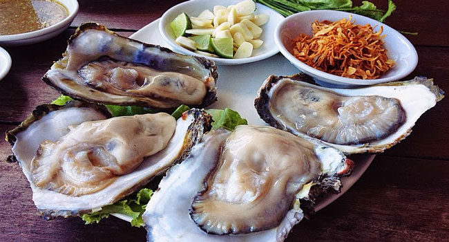
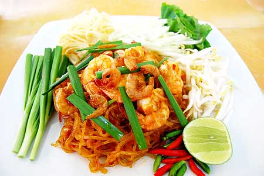

เงาะโรงเรียน
เงาะโรงเรียนมีลักษณะพิเศษที่แตกต่างจากเงาะทั่วไป เพราะเมื่อสุกแล้วเปลือกผลมีสีแดง ถึงแม้จะสุกสักเท่าใดปลายขนก็ยังคงมีสีเขียวอยู่ รูปร่างผลกลมรีเล็กน้อย เปลือกบาง เนื้อหนา รสหวานหอม กรอบและล่อน จึงเป็นที่นิยม
หอยนางรม
เป็นอาหารทะเลที่ขึ้นชื่อของจังหวัดสุราษฎร์ธานีมีการเพาะ และโดยเฉพาะที่บริเวณอ่าว ต.ท่าทอง อ.กาญจนดิษฐ์ จ.สุราษฎร์ธานี ถือเป็นแหล่งเลี้ยงหอยนางรมใหญ่ที่สุดในประเทศไทย เนื่องจากที่นี่มีความอุดมสมบูรณ์ค่อนข้างมากจึงทำให้หอยนางรมมีขนาดใหญ่ เนื้อขาว สะอาด รสหวาน ไม่มีกลิ่นคาว
ไข่เค็มไชยา
มีแหล่งผลิตอยู่ในแถบอำเภอไชยา ใช้ไข่เป็ดในการทำไข่เค็ม โดยมีลักษณะพิเศษต่างจากที่อื่น คือ ไข่จะแดงเป็นพิเศษและไม่คาว โดยวิธีการผลิตนั้นแตกต่างจากแหล่งอื่น คือ ใช้วิธีนำดินผสมแกลบเผาและเกลือมาพอกไข่เป็ด และไม่ใช้วิธีดองไข่ในน้ำเกลือ
ผัดไทยไชยา
เป็นอาหารดั้งเดิมของอำเภอไชยา จ.สุราษฎร์ธานี ที่มีมานานมากว่า 100 ปี แต่เดิมนิยมทำรับประทานกันในอ.ไชยา ท่าฉาง พุนพิน และ อ.เมือง แต่ปัจจุบันเริ่มเป็นที่นิยมกันอย่างแพร่หลาย